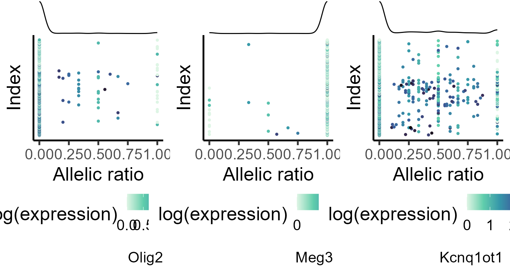
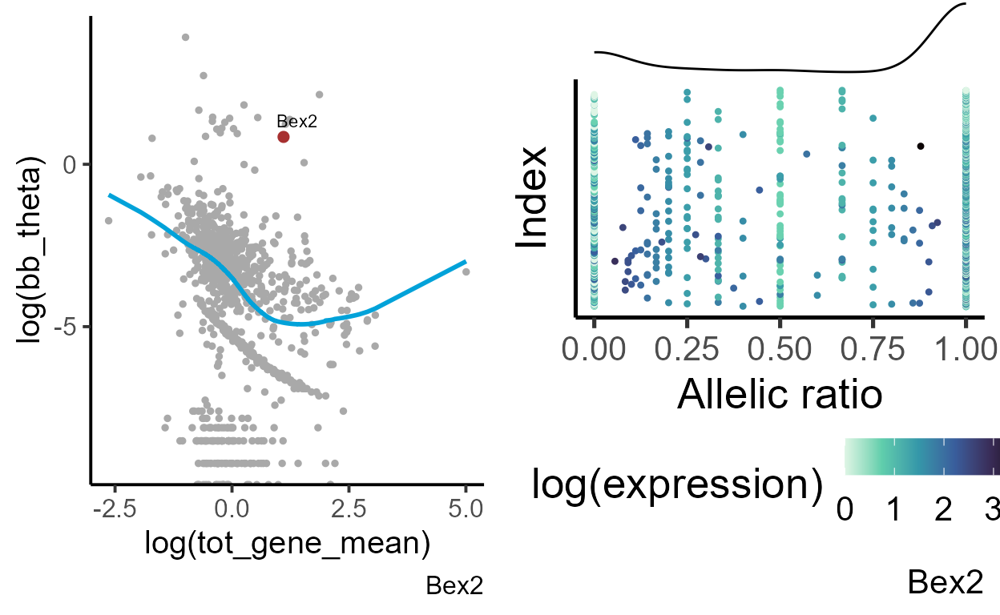

allelic_variance
allelic_variance.RmdAllelic variance test
Introduction
Evaluating allele-specific expression (ASE) at single-cell level allows identify genes that are going through a transient activation state. Sometimes gene activation occurs gradually. In scRNA data, this gradual activation may appear as increased variation in the allelic ratio distribution. Genes with monoallelic expression (only one of the alleles is active) are one of the examples of stochastic gene activation. Within ASPEN, we can define monoallelic genes using parameters and . When or , beta-binomial distribution is skewed towards one of the alleles. When both and , beta-binomila distribution assumes a U-shape, whoch is associated with random monoallelic expression.
\insert figure Supp1 E
No all genes defined as monoallelic are activated in a stochastic manner. So, to select the genes with allelic variation different from the expected for genes with similar expression levels, ASPEN uses the allelic dispersion test. It compares the likelihood of a gene’s allelic variation to follow the variation expected for genes with similar expression () vs. the likelihood of a gene’s variation to follows the observed variation (). The expected variation is the common dispersion, obtained by fitting a local linear regression model, and the observed variation is the estimated dispersion.\
We will be using the same CastB6 dataset to demonstrate ASPEN’s ability to identify random monoallelic genes. The steps are the same as in the “Allelic imbalance test” vignette. If the users already have the object from beta_binom_test command, there’s no need to re-run the steps shown here - all information required is there. \
library(ASPEN)
#> Loading required package: doParallel
#> Loading required package: foreach
#> Loading required package: iterators
#> Loading required package: parallel
#> Loading required package: locfit
#> locfit 1.5-9.9 2024-03-01
#> Loading required package: ggplot2
#> Loading required package: ggthemes
#> Loading required package: ggsci
#> Loading required package: ggpointdensity
#> Loading required package: ggExtra
#> Loading required package: ggrepel
#> Loading required package: ggpubr
#> Loading required package: assertthat
#> Loading required package: zoo
#>
#> Attaching package: 'zoo'
#> The following objects are masked from 'package:base':
#>
#> as.Date, as.Date.numeric
#> Loading required package: dplyr
#>
#> Attaching package: 'dplyr'
#> The following objects are masked from 'package:stats':
#>
#> filter, lag
#> The following objects are masked from 'package:base':
#>
#> intersect, setdiff, setequal, union
#> Loading required package: data.table
#>
#> Attaching package: 'data.table'
#> The following objects are masked from 'package:dplyr':
#>
#> between, first, last
#> The following objects are masked from 'package:zoo':
#>
#> yearmon, yearqtr
#> Loading required package: VGAM
#> Loading required package: stats4
#> Loading required package: splines
library(gridExtra)
#>
#> Attaching package: 'gridExtra'
#> The following object is masked from 'package:dplyr':
#>
#> combine
library(openxlsx)Loading allele-specifc count data
data("Cast_B6_a1")
data("Cast_B6_tot")
load_file <- system.file("extdata", "Cast_B6_cell_annot.xlsx", package = "ASPEN")
cell_annot <- read.xlsx(load_file, rowNames = T)Data pre-processing
Analysis of allelic imblanace will be done in each cell type separately. First, we split the metadata object by cell types.
#splitting the metadata by cell type
cell_list <- split(cell_annot, f = cell_annot$cell_idents)
a1_mat <- lapply(cell_list, function(q) Cast_B6_a1[,gsub(".*_", "", colnames(Cast_B6_a1)) %in% q$cell_barcode])
tot_mat <- lapply(cell_list, function(q) Cast_B6_tot[,gsub(".*_", "", colnames(Cast_B6_tot)) %in% q$cell_barcode])Remove low-expressed genes that have counts in less than 10 cells
Estimating beta-binomial parameters
bb_init_params <- mapply(function(p, q) estim_bbparams(p, q, min_cells = 5, cores = 6), a1_mat, tot_mat, SIMPLIFY = F)Performing Bayesian shrinkage
shrunk_estims <- lapply(bb_init_params, function(q) correct_theta(q, delta_set = 50, N_set = 30, thetaFilter = 0.001))Estimating global beta-binomial parameters
load_file <- system.file("extdata", "mm10_genesXY.txt", package = "ASPEN")
genesXY <- read.table(load_file)
load_file <- system.file("extdata", "mm10_imprinted_genes.xlsx", package = "ASPEN")
genesIMPR <- read.xlsx(load_file, colNames = T)
genes2remove <- c(genesXY$V1, genesIMPR$imprinted.genes)
global_estims <- mapply(function(p, q) glob_disp(p, q, genes.excl = genes2remove, min_counts = 5),
a1_mat, tot_mat, SIMPLIFY = F)
global_estims
#> $`Cortical neurons`
#> mu theta alpha beta
#> 0.5445001 15.0586614 8.1994433 6.8592218
#>
#> $`Gliogenic RGCs`
#> mu theta alpha beta
#> 0.5307348 19.8779514 10.5499393 9.3280478
#>
#> $IPCs
#> mu theta alpha beta
#> 0.541977 18.096688 9.808002 8.288720
#>
#> $OPCs
#> mu theta alpha beta
#> 0.528725 20.121835 10.638866 9.482886
#>
#> $RGCs
#> mu theta alpha beta
#> 0.5298265 19.8136680 10.4979006 9.3159135Allelic imbalance test
Running beta_binom_test function to identify genes with allelic ratio deviating from the null hypothesis.
bb_test_res <- mapply(function(p, q, r, s) beta_binom_test(p, q, r, min_cells = 5, glob_params = s),
a1_mat, tot_mat, shrunk_estims, global_estims, SIMPLIFY = F)For genes in which the quality cut-off threshold (here we used a minimum of five cells with at least of five mapped reads) was not met, the inference is not performed, Those genes have NA values in the fields specified above. We remove those genes and calculate fdr’s.
Defining genes with monoallelic expression
Genes with monoallelic expression are defined based on or .
bb_test_res <- lapply(bb_test_res, function(q) {q$monoal <- ifelse(q$alpha < 1 | q$beta < 1, 1, 0);
return(q)}) Counting the number of genes with monoallelic expression
lapply(bb_test_res, function(q) table(q$monoal))
#> $`Cortical neurons`
#>
#> 0 1
#> 933 41
#>
#> $`Gliogenic RGCs`
#>
#> 0 1
#> 751 38
#>
#> $IPCs
#>
#> 0 1
#> 821 35
#>
#> $OPCs
#>
#> 0 1
#> 1233 45
#>
#> $RGCs
#>
#> 0 1
#> 999 41
lapply(bb_test_res, function(q) q[q$monoal == 1, c("AR", "fdr_mean", "fdr_disp")][1:10,])
#> $`Cortical neurons`
#> AR fdr_mean fdr_disp
#> Hmgb1 0.97643613 0.000000e+00 7.905540e-01
#> Gm9794 0.01123967 0.000000e+00 9.300338e-01
#> Eif4a1 0.99820847 0.000000e+00 9.246473e-01
#> Meg3 0.97227619 0.000000e+00 1.140593e-190
#> Rps15a 0.98462626 1.284571e-321 1.000000e+00
#> Mrps33 0.02022556 3.362626e-284 1.000000e+00
#> Mrpl23 0.09347181 3.922187e-202 6.518745e-01
#> Kcnq1ot1 0.19675165 1.077090e-163 1.033068e-97
#> Hspe1 0.94639853 1.302133e-156 8.378980e-01
#> Rian 0.96518265 1.415229e-114 1.139575e-04
#>
#> $`Gliogenic RGCs`
#> AR fdr_mean fdr_disp
#> Uchl1 0.9994658120 0.000000e+00 1.000000e+00
#> Rpl23a 0.0007106599 0.000000e+00 1.000000e+00
#> Mt1 0.8669580287 0.000000e+00 8.001087e-173
#> Hnrnpa1 0.0186573636 2.240324e-316 9.975426e-01
#> Sap18 0.0324713976 5.073718e-252 7.807383e-01
#> Hnrnpf 0.9858156028 4.906044e-202 9.968176e-01
#> Tuba1b 0.9579753270 2.839606e-199 9.017063e-01
#> Ndufs5 0.9468367889 5.306905e-185 8.901369e-01
#> Hmgb1 0.9027080745 1.057506e-140 2.853119e-02
#> Meg3 0.9792807018 1.006124e-128 7.691392e-03
#>
#> $IPCs
#> AR fdr_mean fdr_disp
#> Hnrnpa1 0.02615440 0.000000e+00 4.650587e-01
#> Mrps33 0.01634093 7.777812e-292 1.000000e+00
#> Tuba1b 0.92882479 6.019397e-271 3.927004e-11
#> Hmgb1 0.93243643 8.080508e-246 7.147427e-02
#> Meg3 0.96715708 1.345857e-163 1.611868e-07
#> Kcnq1ot1 0.21973159 1.750355e-90 3.063787e-51
#> Mt1 0.92787599 1.060083e-55 2.618539e-01
#> Ecrg4 0.87234352 6.472296e-49 5.932390e-01
#> Bex2 0.70521626 1.297152e-34 2.475917e-145
#> Pcsk1n 0.72386345 5.042572e-33 2.156400e-93
#>
#> $OPCs
#> AR fdr_mean fdr_disp
#> Hmgb1 0.9478554476 0.000000e+00 8.972794e-07
#> Rpl23a 0.0009441385 0.000000e+00 9.814474e-01
#> Olig2 0.0428730357 0.000000e+00 6.002232e-13
#> Mt1 0.9220495174 5.292296e-262 3.369804e-37
#> Kcnq1ot1 0.1750146036 8.799962e-193 4.120615e-135
#> Meg3 0.9668509663 4.225299e-138 4.026685e-03
#> Igfbpl1 0.8478968608 1.009265e-58 6.262431e-02
#> Peg3 0.3223986569 1.651828e-36 2.775568e-10
#> Pttg1 0.3708738138 4.422377e-36 9.351631e-06
#> Pcsk1n 0.6914441478 1.920317e-27 3.032197e-50
#>
#> $RGCs
#> AR fdr_mean fdr_disp
#> Stmn1 0.991590207 0.000000e+00 9.006507e-01
#> Uchl1 0.998704663 0.000000e+00 8.844007e-01
#> Eif4a1 0.998527246 0.000000e+00 8.955503e-01
#> Ubb 0.999825571 0.000000e+00 9.449799e-01
#> Tuba1b 0.964594618 0.000000e+00 1.352107e-01
#> Rpl23a 0.002132592 0.000000e+00 1.000000e+00
#> Hnrnpf 0.967724359 3.499048e-198 7.014207e-01
#> Meg3 0.970766103 5.935190e-198 1.247922e-13
#> Mt1 0.891378145 6.055808e-192 8.057095e-32
#> Kcnq1ot1 0.167193029 1.470896e-105 5.169765e-48Visualizing allelic ratio distribution for selected genes
#specifiying genes for plotting
genes_select <- list("Olig2", "Meg3", "Kcnq1ot1")
#generating data frame for plotting
plot_data <- lapply(genes_select, function(q) makedf(a1_mat[[4]], tot_mat[[4]], gene = q))
p_ar_dist <- mapply(function(p,q,r) plot_distr(p, gene = q),
plot_data, genes_select, SIMPLIFY = F)
do.call(grid.arrange, c(p_ar_dist, ncol = 3))
Defining genes with monoallelic expression
We define genes with stocastic monoalellic expression as those with and and dispersion test .
bb_test_res <- lapply(bb_test_res, function(q) {q$stochmon <- ifelse(q$alpha < 1 & q$beta < 1 & q$fdr_disp < 0.05, 1, 0);
return(q)}) Counting the number of genes with stochastic monoallelic expression
lapply(bb_test_res, function(q) table(q$stochmon))
#> $`Cortical neurons`
#>
#> 0 1
#> 949 25
#>
#> $`Gliogenic RGCs`
#>
#> 0 1
#> 766 23
#>
#> $IPCs
#>
#> 0 1
#> 829 27
#>
#> $OPCs
#>
#> 0 1
#> 1248 30
#>
#> $RGCs
#>
#> 0 1
#> 1013 27
lapply(bb_test_res, function(q) q[q$stochmon == 1, c("AR", "fdr_mean", "fdr_disp")][1:10,])
#> $`Cortical neurons`
#> AR fdr_mean fdr_disp
#> Meg3 0.9722762 0.000000e+00 1.140593e-190
#> Kcnq1ot1 0.1967517 1.077090e-163 1.033068e-97
#> Rian 0.9651826 1.415229e-114 1.139575e-04
#> Bex2 0.7055751 2.520953e-59 0.000000e+00
#> Gpm6b 0.7661415 1.191885e-34 9.087901e-23
#> Pgrmc1 0.7435183 1.448332e-31 5.252864e-39
#> Ndufb11 0.7108018 2.111889e-30 1.292985e-84
#> Pcsk1n 0.6719172 2.213920e-29 0.000000e+00
#> Tspan7 0.7173211 4.110823e-28 1.662563e-54
#> Dcx 0.6763636 4.309070e-27 1.623979e-250
#>
#> $`Gliogenic RGCs`
#> AR fdr_mean fdr_disp
#> Mt3 0.6394238 1.923467e-21 0.000000e+00
#> Bex2 0.6356850 6.559192e-18 7.309592e-99
#> Car8 0.7876656 4.615206e-16 5.038297e-05
#> Pcsk1n 0.6499329 9.821004e-16 1.277224e-66
#> Pttg1 0.7169136 6.344400e-11 6.476914e-11
#> Acot1 0.6716416 2.266034e-09 7.255403e-42
#> Sh3bgrl 0.6225959 5.321953e-07 2.767787e-34
#> Maged1 0.6040796 1.307228e-05 1.562212e-65
#> Hmgn3 0.4132843 2.317343e-05 1.308832e-17
#> Rps4x 0.5013161 1.157080e-04 0.000000e+00
#>
#> $IPCs
#> AR fdr_mean fdr_disp
#> Meg3 0.9671571 1.345857e-163 1.611868e-07
#> Kcnq1ot1 0.2197316 1.750355e-90 3.063787e-51
#> Bex2 0.7052163 1.297152e-34 2.475917e-145
#> Pcsk1n 0.7238634 5.042572e-33 2.156400e-93
#> Ndufb11 0.7091161 4.608995e-29 7.574625e-101
#> Gpm6b 0.7540984 1.044522e-28 3.542380e-50
#> Uba1 0.7228864 4.659623e-24 2.033596e-31
#> Dcx 0.7080914 4.878448e-24 1.574144e-93
#> Sh3bgrl 0.7044415 1.785874e-22 5.442870e-94
#> Tspan7 0.7410091 2.479621e-18 1.133209e-27
#>
#> $OPCs
#> AR fdr_mean fdr_disp
#> Pcsk1n 0.6914441 1.920317e-27 3.032197e-50
#> Tspan7 0.6856153 1.149593e-25 2.482703e-125
#> Bex2 0.6369462 2.148938e-25 0.000000e+00
#> Sh3bgrl 0.6504544 6.543171e-15 4.375254e-77
#> Gpm6b 0.6032395 1.712115e-13 0.000000e+00
#> Mt3 0.4722671 4.715362e-13 8.325656e-180
#> Hmgn3 0.3744833 1.299766e-11 1.403906e-17
#> Actc1 0.8105676 8.610171e-11 8.445416e-03
#> Ndufb11 0.5983074 4.104903e-10 0.000000e+00
#> Maged1 0.6099266 1.476361e-08 2.349771e-139
#>
#> $RGCs
#> AR fdr_mean fdr_disp
#> Dcx 0.8404762 9.278528e-24 3.427824e-08
#> Pcsk1n 0.6906062 1.215600e-20 2.506764e-86
#> Bex2 0.6564178 4.384985e-19 1.165068e-124
#> Gpm6b 0.6250239 4.147241e-12 0.000000e+00
#> Sh3bgrl 0.6500220 3.172338e-09 2.137462e-49
#> Ndufb11 0.6096191 1.325749e-08 2.226269e-159
#> Tspan7 0.6268899 4.309350e-08 2.337568e-164
#> Zrsr2 0.6393346 5.497509e-08 9.269872e-47
#> H2ac6 0.6950820 8.766437e-08 3.950980e-02
#> Maged1 0.6356134 1.817995e-07 3.024839e-63We can visualise how far dispersion for the genes with stochastic monoallelic expression deviates from the expected dispersion for genes with similar expression
gene = "Bex2"
exp_theta <- plot_exp_disp(bb_test_res[[1]], gene = gene)
#generating data frame for plotting
plot_data <- makedf(a1_mat[[1]], tot_mat[[1]], gene = gene)
ar_dist <- plot_distr(plot_data, gene = gene)
grid.arrange(exp_theta, ar_dist, ncol = 2)
Bex2 (brain expressed X-linked 2) gene shows strong bias towards the maternal (Bl6) allele. Its allelic variation greatly deviates from the expected dispersion for genes with similar expression. We can compare the allelic distribution with a gene that does not show deviation from a common trend. For example, Npm1 gene.
bb_test_res[[1]][c("Bex2", "Npm1"), c("AR", "tot_gene_mean", "fdr_mean", "fdr_disp")]
#> AR tot_gene_mean fdr_mean fdr_disp
#> Bex2 0.7055751 3.010133 2.520953e-59 0
#> Npm1 0.5635717 3.448385 1.517658e-02 1
gene = "Npm1"
exp_theta <- plot_exp_disp(bb_test_res[[1]], gene = gene)
#generating data frame for plotting
plot_data <- makedf(a1_mat[[1]], tot_mat[[1]], gene = gene)
ar_dist <- plot_distr(plot_data, gene = gene)
grid.arrange(exp_theta, ar_dist, ncol = 2)